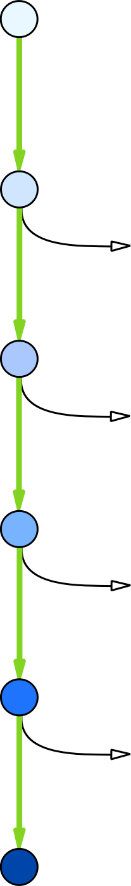

| Несмотря на кажущуюся сложность и непонятность процесса, процедура регистрации товарного знака достаточно проста и состоит из следующих этапов: | ||
| > Этап | Описание | Что нужно сделать на нашём сайте |
|---|---|---|
|  | ||
| Этап 0: Идея и желание зарегистрировать товарный знак. | На этом этапе необходимо зарегистрироваться на нашем сайте, это займёт не более 5 минут. | |
| Этап 1: Заполнение формы заявки на регистрацию. |
На этом этапе необходимо пройти в соответствующий раздел.
Мы предоставляем удобные формы с пояснениями и автоматической проверкой формальной корректности внесённых данных. После заполнения Вы можете загрузить полученный пакет документов. Примерное время: определяется пользователем Стоимость этапа: 1000р |
|
| Этап 2: Проверка заявки на плагиат и поиск аналогов в базах данных. |
На этом этапе Ваша заявка пропускается через нашу систему поиска аналогов. В случае, если таковые найдутся, Вы сможете ознакомиться с ними и внести изменения в свою заявку. Примерное время: 10 мин Стоимость этапа: 1000р |
|
| Этап 3: Проверка формы экспертом. |
На этом этапе Ваша заявка попадает к нашим экспертам-патентоведам, которые изучат её и одобрят к дальнейшим шагам, или, при необходимости, помогут довести её до лучшего состояния.
Примерное время: 1-3 дня Стоимость этапа: 2000р |
|
| Этап 4: Оплата госпошлины. |
На этом этапе необходимо оплатить госпошлину, минимальный размер которой в 2021 году составит 23 100. На этом этапе никаких денег непосредственно нам платить, естественно, не нужно.
Примерное время: 1-3 дня Стоимость этапа: равна стоимости госпошлины. |
|
| Регистрация завершена, осталось получить сертификат. | ||